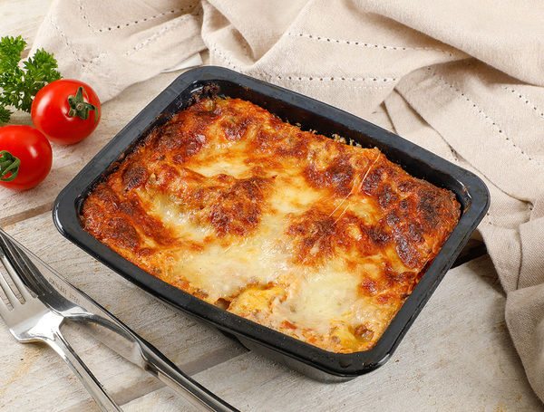

Lancia Ypsilon Engine Lasagna

Ahh yes, the famous Lancia Ypsilon Lasagna, indeed a classic dish.
Delicious and simple to make, and only with two to three ingredients.
So let's start!
Ingredients:
- 1999 Lancia Ypsilon
- Supermarket lasagna (not a frozen one)
- A friend to help you rev the engine when you are bored (optional)
Steps:
- Pop the 1999 Lancia Ypsilon's hood up
- Unpack the lasagna
- Snuggly fit the lasagna wherever it might get heated
- Turn on the car
- Start revving it up, until the lasagna is at your desired temperature, I recommend lukewarm
- Share the lasagna (optional) with the friend that you brought to help you (optional)
See? It's easy! This dish will surely impress anyone!
You will get that promotion if you cook this for your boss!
This truly is one of the recipes of all time!
Back to top